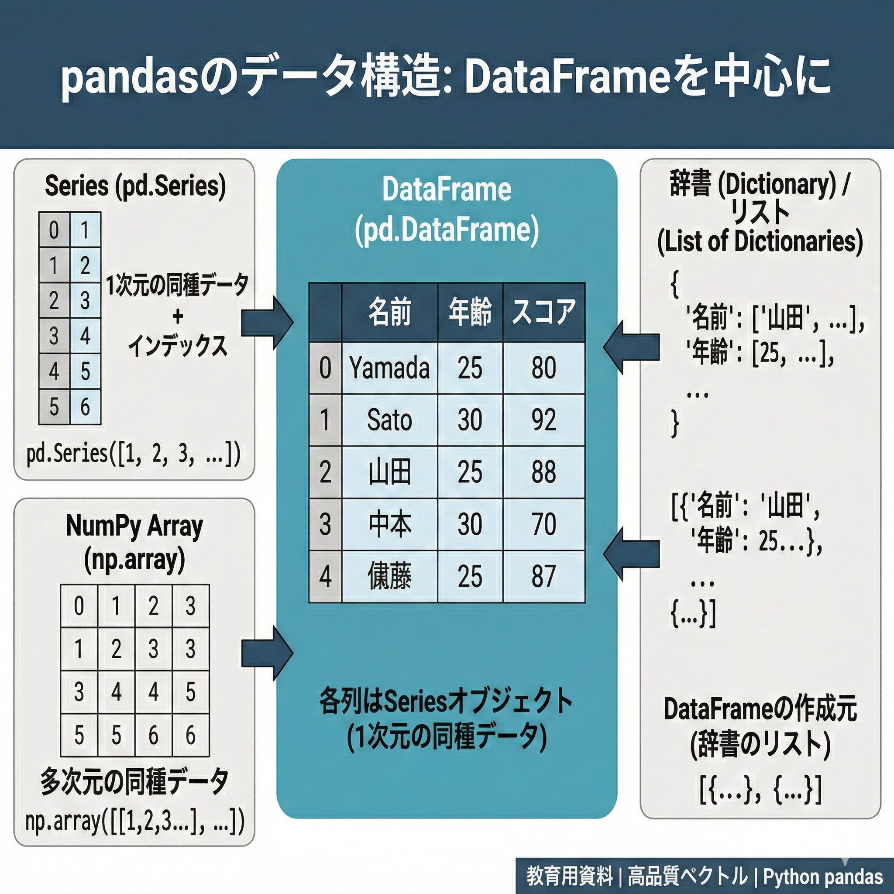
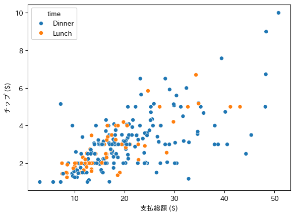

import pandas as pd第2回 データの構造と扱い

データを「整える」思想
データ分析において、一番時間を食う作業は何でしょうか。複雑な統計モデルの構築ではありません。「データの掃除（Data Wrangling）」です。 形式の揃っていないデータ、謎の空白、表記の揺れ。これらを人間が扱える形に整えるだけで、プロジェクトの時間の8割が消えることすらあります。
本節では、この泥臭い作業をエレガントに片付ける武器、pandas を導入します。
pandas：人間中心のPython
Pythonにもデータを扱う手段は色々ありますが、表形式データ（行と列）を扱うなら pandas が事実上の標準です。 「人間が読みやすく、書きやすい」ことを優先しつつ、現実のデータ分析に必要な機能が一通り揃っています。
インストール（世界への入り口）：初回のみ
pip install pandasロード（道具箱を開ける）：起動するたびに必要
これだけで、必要な道具一式（加工、可視化、読み込み…）は揃います。
データフレーム：世界を表にする
現実のデータは、混沌としています。それをコンピュータが理解できる形は、結局「行と列」だけです。 Python（pandas）での呼び名も データフレーム です。
- 行（Row）：ひとつの観測単位（1人の人間、1回の取引、1日の記録）
- 列（Column）：属性や変数（年齢、金額、気温）
現実をPythonに取り込む（CSV読み込み）
手元のExcelやCSVファイルは、まだ「外」にあります。これを「中」（Pythonの計算世界）に引き入れる儀式が read_csv() です。
今回は、Pythonのライブラリ等でもよく使われる tips（レストランのチップ支払い記録）をWebから直接読み込んでみます。
import pandas as pd
url = "https://raw.githubusercontent.com/mwaskom/seaborn-data/master/tips.csv"
tips = pd.read_csv(url)
# データの「顔見せ」
tips.info()
tips.head()<class 'pandas.core.frame.DataFrame'>
RangeIndex: 244 entries, 0 to 243
Data columns (total 7 columns):
# Column Non-Null Count Dtype
--- ------ -------------- -----
0 total_bill 244 non-null float64
1 tip 244 non-null float64
2 sex 244 non-null object
3 smoker 244 non-null object
4 day 244 non-null object
5 time 244 non-null object
6 size 244 non-null int64
dtypes: float64(2), int64(1), object(4)
memory usage: 13.5+ KB| total_bill | tip | sex | smoker | day | time | size | |
|---|---|---|---|---|---|---|---|
| 0 | 16.99 | 1.01 | Female | No | Sun | Dinner | 2 |
| 1 | 10.34 | 1.66 | Male | No | Sun | Dinner | 3 |
| 2 | 21.01 | 3.50 | Male | No | Sun | Dinner | 3 |
| 3 | 23.68 | 3.31 | Male | No | Sun | Dinner | 2 |
| 4 | 24.59 | 3.61 | Female | No | Sun | Dinner | 4 |
読み込んだ瞬間、変数の型（数値なのか、文字なのか）は自動判定されます。Excelによくある「数字なのに文字扱い」みたいなトラブルも、入り口で防げます。
データ操作の文法（pandas）
pandasには、データ加工の基本操作が一通り揃っています。 「列を選ぶ」「行を絞る」「新しい列を作る」「並べ替える」「グループ集計する」――これらがデータ分析の基本動作です。
つなげて書く：メソッドチェーン
pandasでは「メソッドチェーン（メソッドを連結して書く）」で、思考の順番に処理を書けます。
- 単発:
tips[["total_bill"]].head()→ 「列を選んで、先頭を見る」 - 連結:
tips.query('time == "Dinner"').sort_values("tip", ascending=False).head()→ 「絞って、並べて、先頭を見る」
1. 切り分ける：列の選択と行の抽出
分析はまず、要らない部分を削ぎ落とすことから始まります。
列（変数）を選ぶ 「分析に性別と喫煙情報は関係ない」なら、こう。
tips[["total_bill", "tip"]].head()| total_bill | tip | |
|---|---|---|
| 0 | 16.99 | 1.01 |
| 1 | 10.34 | 1.66 |
| 2 | 21.01 | 3.50 |
| 3 | 23.68 | 3.31 |
| 4 | 24.59 | 3.61 |
行（観測）を絞る 「ディナーの客だけ見たい」なら、こう。
tips.query('time == "Dinner"').head()| total_bill | tip | sex | smoker | day | time | size | |
|---|---|---|---|---|---|---|---|
| 0 | 16.99 | 1.01 | Female | No | Sun | Dinner | 2 |
| 1 | 10.34 | 1.66 | Male | No | Sun | Dinner | 3 |
| 2 | 21.01 | 3.50 | Male | No | Sun | Dinner | 3 |
| 3 | 23.68 | 3.31 | Male | No | Sun | Dinner | 2 |
| 4 | 24.59 | 3.61 | Female | No | Sun | Dinner | 4 |
2. 加工する：新しい列を作る
既存の列を使って新しい指標を作るときは assign() が便利です。 「チップの額」そのものより、「支払額に対するチップの割合」の方が意味があるでしょう。
(
tips
.assign(tip_rate=lambda df: df["tip"] / df["total_bill"])
.loc[:, ["total_bill", "tip", "tip_rate"]]
.head()
)| total_bill | tip | tip_rate | |
|---|---|---|---|
| 0 | 16.99 | 1.01 | 0.059447 |
| 1 | 10.34 | 1.66 | 0.160542 |
| 2 | 21.01 | 3.50 | 0.166587 |
| 3 | 23.68 | 3.31 | 0.139780 |
| 4 | 24.59 | 3.61 | 0.146808 |
3. 並べる：並べ替え
データは最初、「記録順」です。これを「意味のある順」に変えます。
# チップを多く払った順（降順）に並べる
tips.sort_values("tip", ascending=False).head()| total_bill | tip | sex | smoker | day | time | size | |
|---|---|---|---|---|---|---|---|
| 170 | 50.81 | 10.00 | Male | Yes | Sat | Dinner | 3 |
| 212 | 48.33 | 9.00 | Male | No | Sat | Dinner | 4 |
| 23 | 39.42 | 7.58 | Male | No | Sat | Dinner | 4 |
| 59 | 48.27 | 6.73 | Male | No | Sat | Dinner | 4 |
| 141 | 34.30 | 6.70 | Male | No | Thur | Lunch | 6 |
4. 要約する：グループ集計
個別の値より「傾向」が知りたいなら、グループにまとめて（groupby）、縮約（agg）します。 「ランチとディナー、どっちが羽振りがいいのか？」という問いに答えてみましょう。
(
tips
.groupby("time", as_index=False)
.agg(
平均支払額=("total_bill", "mean"),
平均チップ=("tip", "mean"),
データ数=("tip", "size"),
)
)| time | 平均支払額 | 平均チップ | データ数 | |
|---|---|---|---|---|
| 0 | Dinner | 20.797159 | 3.102670 | 176 |
| 1 | Lunch | 17.168676 | 2.728088 | 68 |
ストーリーで書く
これらの「動詞」と「パイプ」を組み合わせれば、複雑なデータ処理も一つのストーリーとして記述できます。
問い：土曜日のディナーに来た客のうち、特にチップを弾んでくれた（総額の20%以上）のはどんな人たちか？支払額が高い順に見たい。
この思考プロセスをそのままコードにします。
(
tips
.query('day == "Sat" and time == "Dinner"') # 土曜日のディナー客で
.assign(rate=lambda df: df["tip"] / df["total_bill"]) # チップ率を計算し
.query("rate >= 0.2") # 20%以上に絞り込み
.sort_values("total_bill", ascending=False) # 支払額が高い順に並べる
.loc[:, ["sex", "size", "total_bill", "tip", "rate"]] # 必要な情報だけ見る
)| sex | size | total_bill | tip | rate | |
|---|---|---|---|---|---|
| 239 | Male | 3 | 29.03 | 5.92 | 0.203927 |
| 214 | Female | 3 | 28.17 | 6.50 | 0.230742 |
| 63 | Male | 4 | 18.29 | 3.76 | 0.205577 |
| 108 | Male | 2 | 18.24 | 3.76 | 0.206140 |
| 20 | Male | 2 | 17.92 | 4.08 | 0.227679 |
| 109 | Female | 2 | 14.31 | 4.00 | 0.279525 |
| 110 | Male | 2 | 14.00 | 3.00 | 0.214286 |
| 228 | Male | 2 | 13.28 | 2.72 | 0.204819 |
| 232 | Male | 2 | 11.61 | 3.39 | 0.291990 |
| 67 | Female | 1 | 3.07 | 1.00 | 0.325733 |
この「読みやすさ」こそ、私たちがpandas（メソッドチェーン）を使う理由です。数ヶ月後の自分が見ても、「何がしたかったか」一目で分かります。
データ操作の補足事項
列の選び方
pandasにも「取り出し方の違い」があります。
tips["total_bill"]：1本の列（Series）として取り出す。計算式の内部で使うことが多い。tips[["total_bill"]]：データフレームのまま取り出す。加工を続けるときに便利。 使い分けですが、複数列を扱う処理ではtips[["col1", "col2"]]の形が無難です。
データのチラ見（可視化）
数字だけだと見逃します。seaborn でサッと可視化する癖をつけてください。
import seaborn as sns
import matplotlib.pyplot as plt
import japanize_matplotlib # noqa: F401
ax = sns.scatterplot(data=tips, x="total_bill", y="tip", hue="time")
ax.set(xlabel="支払総額 ($)", ylabel="チップ ($)")
plt.show()
課題
自分でストーリーを作ってみましょう。
dayが “Sun”（日曜日）である行のみを抽出する（filter）。- 抽出したデータから、
total_billとsizeの2列のみを選択して表示する（select）。
練習問題
正解かどうかより、「コードが思考の流れを表しているか」を意識してください。
練習1: 基礎確認
glimpse() や dim() を使い、このデータセットが「何行何列」で、「変数の型は何か」を言葉で説明してください。
練習2: 仮説の検証
「女性客の方がチップ率が高いのではないか？」という仮説を検証するコードを書いてください。（ヒント：filterで女性を抽出し、mutateで率を計算し、summarizeで平均を出す、など方法は幾通りもあります）
練習3: パイプラインの構築
以下の処理をひとつのパイプラインで書いてみてください。
- 土曜日 (
Sat) のデータを抽出。 - チップ率を計算し、新しい列として追加。
- そのチップ率が高い順（降順）に並べ替え。
- 上位5件を表示。